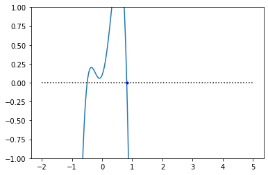
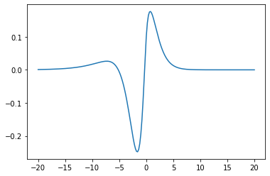

%matplotlib inline
import matplotlib.pyplot as plt
import sympy as sym
import numpy as np
sympy_modules = [{'Heaviside': lambda x: np.heaviside(x, 0.5)}, 'numpy']
from scipy.optimize import bisectγ, c, α, μ, θ = sym.symbols(r'\gamma c \alpha \mu \theta', real=True, positive=True)
ξ, y, x = sym.symbols(r'\xi y x', real=True)w = (1 - sym.Abs(x))*sym.exp(-sym.Abs(x))
Q = γ + (1-γ)*sym.exp(y/c/α/γ)arg = w.subs(x, ξ-y)*Qforcing_positive = sym.integrate(arg.subs(sym.Abs(ξ-y), ξ-y), (y, -sym.oo, 0))forcing_negative = sym.integrate(arg.subs(sym.Abs(ξ-y), ξ-y), (y, -sym.oo, ξ)) + sym.integrate(arg.subs(sym.Abs(ξ-y), y-ξ), (y, ξ, 0)).args[0][0]
forcing_negative = forcing_negative.expand().collect(sym.exp(ξ)).collect(sym.exp(ξ/α/γ/c))\(\xi < 0\)
U_left = sym.exp(ξ/c/μ) *(θ + sym.integrate(sym.exp(-ξ/c/μ)*forcing_negative, (ξ, 0, ξ)).args[-1][0])U_left.simplify()\(\displaystyle \frac{\gamma \mu c^{2} \left(- \alpha^{5} \gamma^{4} \mu c^{4} + 2 \alpha^{4} \gamma^{4} \mu c^{3} - \alpha^{4} \gamma^{4} c^{2} + \alpha^{4} \gamma^{3} \mu^{2} c^{4} - 2 \alpha^{4} \gamma^{3} \mu c^{3} + \alpha^{4} \gamma^{3} c^{2} + 2 \alpha^{3} \gamma^{3} \mu^{2} c^{3} - 4 \alpha^{3} \gamma^{3} \mu c^{2} + 2 \alpha^{3} \gamma^{3} c - 2 \alpha^{3} \gamma^{2} \mu^{2} c^{3} + 6 \alpha^{3} \gamma^{2} \mu c^{2} - 2 \alpha^{3} \gamma^{2} c - 3 \alpha^{2} \gamma^{2} \mu^{2} c^{2} + 2 \alpha^{2} \gamma^{2} \mu c - \alpha^{2} \gamma^{2} + \alpha^{2} \gamma \mu^{2} c^{2} - 2 \alpha^{2} \gamma \mu c + \alpha^{2} \gamma - \alpha \mu + \mu^{2}\right) e^{\frac{\xi}{\mu c}} + \gamma \mu c \left(- \alpha^{5} \gamma^{4} \mu \xi c^{5} e^{\xi} + \alpha^{5} \gamma^{4} \mu c^{5} e^{\xi} + \alpha^{5} \gamma^{4} \xi c^{4} e^{\xi} + \alpha^{4} \gamma^{4} \mu \xi c^{4} e^{\xi} - 2 \alpha^{4} \gamma^{4} \mu c^{4} e^{\xi} - \alpha^{4} \gamma^{4} \xi c^{3} e^{\xi} + \alpha^{4} \gamma^{4} c^{3} e^{\xi} + \alpha^{4} \gamma^{3} \mu^{2} \xi c^{5} e^{\xi} - \alpha^{4} \gamma^{3} \mu^{2} c^{5} e^{\xi} - 2 \alpha^{4} \gamma^{3} \mu \xi c^{4} e^{\xi} + 2 \alpha^{4} \gamma^{3} \mu c^{4} e^{\xi} + \alpha^{4} \gamma^{3} \xi c^{3} e^{\xi} - \alpha^{4} \gamma^{3} c^{3} e^{\xi} - \alpha^{3} \gamma^{3} \mu^{2} \xi c^{4} e^{\xi} + 2 \alpha^{3} \gamma^{3} \mu^{2} c^{4} e^{\xi} - 4 \alpha^{3} \gamma^{3} \mu^{2} c^{4} e^{\frac{\xi}{\alpha \gamma c}} + 2 \alpha^{3} \gamma^{3} \mu \xi c^{3} e^{\xi} - 4 \alpha^{3} \gamma^{3} \mu c^{3} e^{\xi} + 8 \alpha^{3} \gamma^{3} \mu c^{3} e^{\frac{\xi}{\alpha \gamma c}} - \alpha^{3} \gamma^{3} \xi c^{2} e^{\xi} + 2 \alpha^{3} \gamma^{3} c^{2} e^{\xi} - 4 \alpha^{3} \gamma^{3} c^{2} e^{\frac{\xi}{\alpha \gamma c}} + \alpha^{3} \gamma^{2} \mu^{2} \xi c^{4} e^{\xi} - 2 \alpha^{3} \gamma^{2} \mu^{2} c^{4} e^{\xi} + 4 \alpha^{3} \gamma^{2} \mu^{2} c^{4} e^{\frac{\xi}{\alpha \gamma c}} + 2 \alpha^{3} \gamma^{2} \mu c^{3} e^{\xi} - 8 \alpha^{3} \gamma^{2} \mu c^{3} e^{\frac{\xi}{\alpha \gamma c}} - \alpha^{3} \gamma^{2} \xi c^{2} e^{\xi} - 2 \alpha^{3} \gamma^{2} c^{2} e^{\xi} + 4 \alpha^{3} \gamma^{2} c^{2} e^{\frac{\xi}{\alpha \gamma c}} - \alpha^{2} \gamma^{2} \mu^{2} \xi c^{3} e^{\xi} + 3 \alpha^{2} \gamma^{2} \mu^{2} c^{3} e^{\xi} - 2 \alpha^{2} \gamma^{2} \mu c^{2} e^{\xi} + \alpha^{2} \gamma^{2} \xi c e^{\xi} + \alpha^{2} \gamma^{2} c e^{\xi} - \alpha^{2} \gamma \mu^{2} \xi c^{3} e^{\xi} - \alpha^{2} \gamma \mu^{2} c^{3} e^{\xi} + 2 \alpha^{2} \gamma \mu \xi c^{2} e^{\xi} + 2 \alpha^{2} \gamma \mu c^{2} e^{\xi} - \alpha^{2} \gamma \xi c e^{\xi} - \alpha^{2} \gamma c e^{\xi} + \alpha \gamma \mu^{2} \xi c^{2} e^{\xi} - 2 \alpha \gamma \mu \xi c e^{\xi} + \alpha \gamma \xi e^{\xi} - \alpha \mu^{2} \xi c^{2} e^{\xi} + \alpha \mu \xi c e^{\xi} + \alpha \mu c e^{\xi} + \mu^{2} \xi c e^{\xi} - \mu^{2} c e^{\xi} - \mu \xi e^{\xi}\right) + \theta \left(\alpha^{5} \gamma^{5} \mu^{2} c^{6} - 2 \alpha^{5} \gamma^{5} \mu c^{5} + \alpha^{5} \gamma^{5} c^{4} - \alpha^{4} \gamma^{4} \mu^{3} c^{6} + 2 \alpha^{4} \gamma^{4} \mu^{2} c^{5} - \alpha^{4} \gamma^{4} \mu c^{4} - 2 \alpha^{3} \gamma^{3} \mu^{2} c^{4} + 4 \alpha^{3} \gamma^{3} \mu c^{3} - 2 \alpha^{3} \gamma^{3} c^{2} + 2 \alpha^{2} \gamma^{2} \mu^{3} c^{4} - 4 \alpha^{2} \gamma^{2} \mu^{2} c^{3} + 2 \alpha^{2} \gamma^{2} \mu c^{2} + \alpha \gamma \mu^{2} c^{2} - 2 \alpha \gamma \mu c + \alpha \gamma - \mu^{3} c^{2} + 2 \mu^{2} c - \mu\right) e^{\frac{\xi}{\mu c}}}{\alpha^{5} \gamma^{5} \mu^{2} c^{6} - 2 \alpha^{5} \gamma^{5} \mu c^{5} + \alpha^{5} \gamma^{5} c^{4} - \alpha^{4} \gamma^{4} \mu^{3} c^{6} + 2 \alpha^{4} \gamma^{4} \mu^{2} c^{5} - \alpha^{4} \gamma^{4} \mu c^{4} - 2 \alpha^{3} \gamma^{3} \mu^{2} c^{4} + 4 \alpha^{3} \gamma^{3} \mu c^{3} - 2 \alpha^{3} \gamma^{3} c^{2} + 2 \alpha^{2} \gamma^{2} \mu^{3} c^{4} - 4 \alpha^{2} \gamma^{2} \mu^{2} c^{3} + 2 \alpha^{2} \gamma^{2} \mu c^{2} + \alpha \gamma \mu^{2} c^{2} - 2 \alpha \gamma \mu c + \alpha \gamma - \mu^{3} c^{2} + 2 \mu^{2} c - \mu}\)
\(\xi > 0\)
U_right = sym.exp(ξ/c/μ) *(θ + sym.integrate(sym.exp(-ξ/c/μ)*forcing_positive, (ξ, 0, ξ)))
U_right = U_right.simplify().collect(sym.exp(ξ*(μ*c+1)/μ/c))
display(U_right)\(\displaystyle \frac{\left(\gamma \mu c \left(\alpha^{2} \gamma \mu \xi c^{3} + \alpha^{2} \gamma \mu c^{3} + \alpha^{2} \gamma \xi c^{2} + \alpha \gamma \mu \xi c^{2} + 2 \alpha \gamma \mu c^{2} + \alpha \gamma \xi c + \alpha \gamma c + \alpha \mu \xi c^{2} + \alpha \xi c - \alpha c + \mu \xi c + \mu c + \xi\right) + \left(\gamma \mu c^{2} \left(- \alpha^{2} \gamma \mu c^{2} - 2 \alpha \gamma \mu c - \alpha \gamma + \alpha - \mu\right) + \theta \left(\alpha^{2} \gamma^{2} \mu^{2} c^{4} + 2 \alpha^{2} \gamma^{2} \mu c^{3} + \alpha^{2} \gamma^{2} c^{2} + 2 \alpha \gamma \mu^{2} c^{3} + 4 \alpha \gamma \mu c^{2} + 2 \alpha \gamma c + \mu^{2} c^{2} + 2 \mu c + 1\right)\right) e^{\frac{\xi \left(\mu c + 1\right)}{\mu c}}\right) e^{- \xi}}{\alpha^{2} \gamma^{2} \mu^{2} c^{4} + 2 \alpha^{2} \gamma^{2} \mu c^{3} + \alpha^{2} \gamma^{2} c^{2} + 2 \alpha \gamma \mu^{2} c^{3} + 4 \alpha \gamma \mu c^{2} + 2 \alpha \gamma c + \mu^{2} c^{2} + 2 \mu c + 1}\)
expr = U_right.args[1].args[0].args[0]
display(expr.expand().collect(c).simplify())\(\displaystyle \alpha^{2} \gamma^{2} \mu^{2} c^{4} \left(\theta - 1\right) + 2 \alpha \gamma \mu c^{3} \left(\alpha \gamma \theta - \gamma \mu + \mu \theta\right) + 2 \theta c \left(\alpha \gamma + \mu\right) + \theta + c^{2} \left(\alpha^{2} \gamma^{2} \theta - \alpha \gamma^{2} \mu + 4 \alpha \gamma \mu \theta + \alpha \gamma \mu - \gamma \mu^{2} + \mu^{2} \theta\right)\)
U = sym.Heaviside(ξ)*U_right.subs(expr, 0) + sym.Heaviside(-ξ)*U_leftsubs_dict = {
α: 20,
γ: .2,
θ: .1,
μ: 1
}
func = sym.lambdify(c, expr.subs(subs_dict))
speed = bisect(func, 0, 5)
xs = np.linspace(-2, 5, 20001)
plt.plot(xs, 0*xs, 'k:')
plt.plot(xs, func(xs))
plt.plot(speed, 0, 'b.')
plt.ylim(-1, 1)
subs_dict2 = {c: speed, **subs_dict}
speed0.8179894612828775U_numeric = sym.lambdify(ξ, U.subs(subs_dict2), modules=sympy_modules)U_numeric(0)0.10000000000006598xs = np.linspace(-20, 20, 201)
plt.plot(xs, U_numeric(xs))
sym.limit(test.subs(subs_dict2), ξ, -sym.oo)\(\displaystyle 0\)
Cannot sustain fronts. Maybe it can sustain pulses.